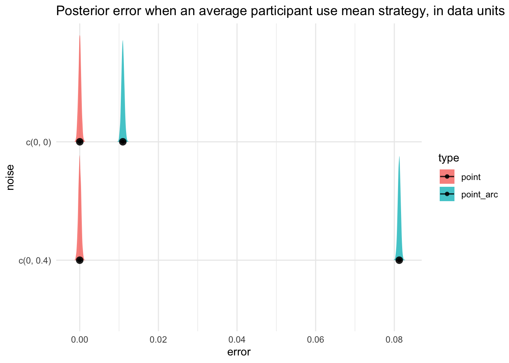
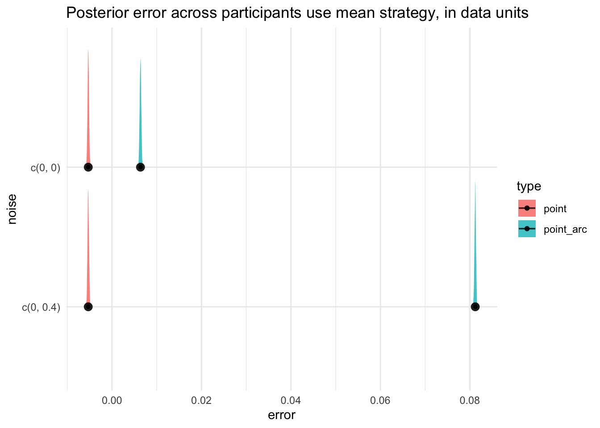

Code
# read in libraries
library(ggplot2)
library(tidyverse)
library(tidybayes)
library(here)
library(jsonlite)
library(brms)
library(posterior)
theme_set(theme_minimal())# read in libraries
library(ggplot2)
library(tidyverse)
library(tidybayes)
library(here)
library(jsonlite)
library(brms)
library(posterior)
theme_set(theme_minimal())Here are the details of the original experiment:
0 and 0.4upper and lower (i.e., whether the plot was flipped or not, where flip == FALSE implies that upper-y region has more variability, and flip == TRUE implies that the lower-y region has more variability)line, cartesian spaced points, arc spaced points
2 * 2 * 12 = 48 trials per participant.First, read in the stimuli data from Mortiz experiment 2:
exp_json_data <- jsonlite::fromJSON(here(
"data",
"moritz",
"stimuli",
"exp2-stimuli.json"
)) %>%
as_tibble(.)
stimuli_df <- exp_json_data %>%
select(index, seed, noise, flip, type, data) %>%
mutate(noise = as.character(noise))
# get the mapping between og index and the index used in exp
stimuli_df %>%
filter(type == "point") %>%
mutate(expIndex = 1:nrow(.)) %>%
select(index, type, expIndex) -> point_map
stimuli_df %>%
filter(type == "point_arc") %>%
mutate(expIndex = 1:nrow(.)) %>%
select(index, type, expIndex) -> pointArc_map
# calculate the answer
stimuli_df %>%
filter(type != "line") %>%
unnest(data) %>%
left_join(point_map, by = join_by(index, type)) %>%
left_join(pointArc_map, by = join_by(index, type)) %>%
mutate(expIndex = coalesce(expIndex.x, expIndex.y)) %>%
select(index, expIndex, type, flip, noise, seed, x, y) %>%
ungroup(.) %>%
rename(ogIndex = index, num.x = x, num.y = y) -> stimuli_df
stimuli_df %>% head(5)TODO: Double check whether data is the correct column we should be pulling and rendering from … I think it is correct but one can never be too careful with these things …
# function definitions
get_og_stimuli <- function(i) {
mean <- stimuli_df %>%
filter(ogIndex == i) %>%
pull(num.y) %>%
mean(.)
stimuli_df %>%
filter(ogIndex == i) %>%
ggplot(aes(x = num.x, y = num.y)) +
geom_point() +
coord_cartesian(ylim = c(0, 1)) +
geom_hline(yintercept = mean, color = "gray", linetype = "dashed") +
annotate("text", x = 120, y = mean, label = mean) +
labs(title = paste0("ogIndex", " ", i))
}Let’s also read in the data collected from pilot. First we get participant’s numerical and pixel responses:
raw_df <- read_csv(here("data", "part_2", "part2_pilot.csv")) %>% as_tibble(.)
pilot_df <- raw_df %>%
select(
participantId,
trialId,
trialOrder,
responseId,
answer,
duration,
parameters_taskid,
parameters_params
)
# responses
pilot_df %>%
filter(responseId %in% c("numericResponse", "pixelResponse")) %>%
select(participantId, trialId, responseId, answer) %>%
separate_wider_delim(
col = trialId,
delim = "_",
names = c("type", NA, "index")
) %>%
pivot_wider(names_from = "responseId", values_from = "answer") %>%
mutate(
numericResponse = as.numeric(numericResponse),
pixelResponse = as.numeric(pixelResponse),
index = as.integer(index)
) %>%
rename(expIndex = index) %>%
mutate(pixelResponse = 200 - pixelResponse + 5) -> resp_df
resp_df %>% head(5)Then we also get a dataset that documents how far away they’re sitting from the screen:
# visual angle related participant-level data
participant_df <- pilot_df %>%
filter(!responseId %in% c("numericResponse", "pixelResponse")) %>%
group_by(participantId) %>%
filter(
responseId %in%
c(
"prolificId",
"pixelsPerMM",
"dist-calibration-MM",
"dist-calibration-CM",
"ball-positions",
"square-position"
)
) %>%
select(participantId, responseId, answer) %>%
pivot_wider(names_from = responseId, values_from = answer) %>%
# we will not use participants who have distance calibration < 250 mm
mutate(`dist-calibration-MM` = as.numeric(`dist-calibration-MM`)) %>%
filter(`dist-calibration-MM` >= 250) %>%
select(1, 3, 4) %>%
rename(distToScreen = `dist-calibration-MM`) %>%
mutate(pixelsPerMM = as.numeric(pixelsPerMM),
distToScreen = as.numeric(distToScreen)
)
# only keep people whose ans are somewhat useful
keep_id <- participant_df %>% pull(participantId)
participant_df %>% head(5)The goal is to translate from the pixel space to the physical space, and then to the visual angle space.
VegaEmbed component we built (directly fetching)500 px and y-axis to 200 px.# return visual angle in degrees and not radian
vis_angle <- function(size, distance) {
return(2 * atan(size / (2 * distance)) * 180 / pi)
}
# define function for turning vis angle to phy size
phys_size <- function(va, distance) {
return(2 * distance * tan(va * pi / 360))
}
# tolerance for numerical precision
tolerance <- 1e-10Process the response df given the new info about participants:
resp_df <- resp_df %>%
filter(participantId %in% keep_id) %>%
left_join(participant_df) %>%
rename(
num.y = numericResponse,
px.y = pixelResponse,
) %>%
mutate(
pixelsPerMM = as.numeric(pixelsPerMM),
phy.y = px.y / pixelsPerMM,
va.y = vis_angle(phy.y, distToScreen)
)
resp_df %>% head(5)We assume that the baseline model is this: participants project from each of the dots to the y-axis, and then perform an averaging. We will use the Project to Y-Axis Model. Recall that we defined error = resp - ans.
For an average participant, the posterior prediction is going to - define $({i, j}) = + (_i) $ - then \(\text{error}_i \sim \mathcal{N}(0, \sigma_{i, j})\) where \(\sigma_{i, j}\) is already defined above.
\[ \begin{align*} \texttt{error}_i &\sim \mathcal{N}(\beta_0 + u_{\text{PID[i]}}, \sigma_{i, \text{PID}[i]}) \\ \log(\sigma_{i, j}) &= \alpha_j + \log(\texttt{va.ans.x}_i) \\ \text{or:} \log(\sigma_{i, j}) &\sim \mathcal{N}(\mu_\alpha + \log(\texttt{va.ans.x}_i), \sigma_\alpha)\\ \alpha_j &\sim N(\mu_\alpha, \sigma_\alpha) \\ \mu_\alpha &\sim N(0, 1) \\ \sigma_\alpha &\sim \mathcal{N}^+(0, 1) \end{align*} \]
Read in the fitted model by first reading in its formula and prior specification:
f <- bf(
error_va ~ (1 | participantId),
sigma ~ (1 | participantId) + offset(log(va.ans.x))
)
p <- c(
prior(normal(0, 1), class = Intercept),
prior(normal(0, 1), class = sd, group = participantId, lb = 0),
prior(normal(0, 1), class = Intercept, dpar = "sigma"),
prior(normal(0, 1), class = sd, group = participantId, dpar = sigma, lb = 0)
)Load the previously fitted model:
model <- readRDS(here("analysis", "fitted_models", "task5.y.rds"))
model Family: gaussian
Links: mu = identity; sigma = log
Formula: error_va ~ 1 + (1 | participantId)
sigma ~ (1 | participantId) + offset(log(va.ans.x))
Data: . (Number of observations: 160)
Draws: 4 chains, each with iter = 6000; warmup = 3000; thin = 1;
total post-warmup draws = 12000
Multilevel Hyperparameters:
~participantId (Number of levels: 16)
Estimate Est.Error l-95% CI u-95% CI Rhat Bulk_ESS Tail_ESS
sd(Intercept) 0.04 0.01 0.03 0.06 1.00 3545 6339
sd(sigma_Intercept) 0.31 0.11 0.12 0.54 1.00 3036 2946
Regression Coefficients:
Estimate Est.Error l-95% CI u-95% CI Rhat Bulk_ESS Tail_ESS
Intercept 0.00 0.01 -0.02 0.03 1.00 2888 4584
sigma_Intercept -4.63 0.10 -4.83 -4.42 1.00 4859 5913
Draws were sampled using sample(hmc). For each parameter, Bulk_ESS
and Tail_ESS are effective sample size measures, and Rhat is the potential
scale reduction factor on split chains (at convergence, Rhat = 1).model %>% get_variables(.) %>% head(4)[1] "b_Intercept" "b_sigma_Intercept"
[3] "sd_participantId__Intercept" "sd_participantId__sigma_Intercept"b_Intercept corresponds to \(\beta_0\)b_sigma_Intercept corresponds to \(\alpha_0\)sd_participantId__Intercept and sd_participantId__sigma_Intercept corresponds to \(\tau_\mu\) and \(\tau_\alpha\)r_participantId[<id>, Intercept], r_participantId__sigma[<id>, Intercept] correspond to \(u_j\) and \(v_j\) respectively.pixelToMM and distToScreen.We will make the predictions for an average participant, conditioning on specific values of pixelToMM and distToScreen.
First, we calculate the visual angle values for all the stimuli. This is the route from num -> px -> MM -> VA. This will allow us to make predictions of error in the visual angle space.
# assume that the value of pixelToMM and distToScreen is fixed
# we get the new_data to be crossed with posterior draws
pixelToMM <- 5.12
distToScreen <- 473
# 5760 rows = 2 (plot type) * 2 (noise type) * 2 (flipped or not) * 12 repeated measures * 60 points per graph
new_data <- stimuli_df %>%
# calculate pixel values from numerical values
mutate(px.x = 500 / 120 * num.x, px.y = 200 * num.y) %>%
# calcuate physical values (in MM) from pixel values
mutate(phy.x = px.x / pixelToMM, phy.y = px.y / pixelToMM) %>%
# calculate visual angle
mutate(
va.ans.x = vis_angle(phy.x, distToScreen),
va.ans.y = vis_angle(phy.y, distToScreen)
)
# get a smaller version of this
# consider only one kind of graph type
nd <- new_data %>%
select(ogIndex, expIndex, type, va.ans.x, va.ans.y) %>%
filter(type == "point")
# 3000 iterations per chain * 4 chains = 12,000 rows
# if we thin by k, then we get 12,000 / k rows
draws <- model %>%
spread_draws(b_Intercept, b_sigma_Intercept) %>%
as_draws_df(.) %>%
thin_draws(thin = 2) # if too much we can also do thinningHere we go from VA -> mm -> px -> num:
pred <- draws %>%
# every draw * every dot; will result in 5760 * 3000 (thinned version) row
expand_grid(new_data) %>%
mutate(
mu = b_Intercept,
sigma = exp(b_sigma_Intercept + log(va.ans.x)),
va.pred.error = rnorm(n(), mean = mu, sd = sigma),
va.pred.y = va.pred.error + va.ans.y
) %>%
# turn vis angle back to numerical values
mutate(
phy.pred.y = phys_size(va.pred.y, distToScreen),
px.pred.y = phy.pred.y * pixelToMM,
num.pred.y = px.pred.y / 200
)
pred %>% head(5)To calculate how many rows that pred has we need to look at these two other dataframes:
draws dataframe has 3000 iterations / chain \(\times\) 4 chains \(\div k = 2\) = 6000 rowsnew_data dataframe has 96 trials \(\times\) 60 dots per trial = 5760 rowspred is going to be 6000 \(\times\) 5760 = 34560000 rowsFor now we will not think about things such as rejection sampling, and just calculate the average across all 60 dots for each trial1:
1 This implies that we wil have 34560000/60 = 576000 rows for avg_pred
avg_pred <- pred %>%
group_by(ogIndex, expIndex, type, flip, noise, .draw) %>%
summarise(
num.pred.avg.y = mean(num.pred.y), # suppose participants can calculate mean
num.pred.median.y = median(num.pred.y), # suppor participants use the median instead
)Averaging Strategy vs. Median Strategy:
“Equal number of points or line below and above. A strategy we did not anticipate was ensuring an equal number of points or line lengths above and below the judgment indicator. To indicate their responses, participants drug a line on the graph. By allowing participants to place a line directly on the graphs, participants could then easily count the number of points above and below the line. One participant simply wrote, “I tried to have the number of points above and below the line be approximately equal.” Unsurprisingly, this strategy was most common for participants who viewed graphs with points equally spaced along the x-axis (24%).” (Moritz et al., 2023, p. 7) (pdf)
Using the same strategy that Moritz et al. used to calculate error and normalized error2, we need to first calculate the answer for each trial:
2 … which is, instead of calculating the actual mean for the actual dataset, for trials that share the same value for seed and flip, they share the same “default mean”, i.e., the mean of the point type, instead of its actual mean.
temp_df <- stimuli_df %>% filter(type == "point") %>%
group_by(seed, flip) %>%
summarise(num.ans.y = mean(num.y)) %>%
ungroup(.)
ans_df <- stimuli_df %>% select(-num.x, -num.y) %>%
group_by(ogIndex, expIndex, type, flip, noise, seed) %>%
summarise(.) %>% ungroup(.) %>%
left_join(temp_df)
ans_dfAnd now we plot the results:
avg_pred %>%
ungroup(.) %>%
left_join(ans_df) %>%
mutate(
error.median = num.pred.median.y - num.ans.y,
norm.error.median = ifelse(flip == FALSE,
num.pred.median.y - num.ans.y,
num.ans.y - num.pred.median.y
),
error.avg = num.pred.avg.y - num.ans.y,
norm.error.avg = ifelse(flip == FALSE,
num.pred.avg.y - num.ans.y,
num.ans.y - num.pred.avg.y
)
) %>%
group_by(type, noise, .draw) %>%
summarise(error = mean(norm.error.avg)) %>%
ggplot(aes(x = error, y = noise, fill = type)) +
stat_halfeye(alpha = 0.8) +
labs(title = "Posterior error when an average participant use mean strategy, in data units")
Recall this is the list of participants we have from pilot:
total_data <- stimuli_df %>% expand_grid(participant_df) %>%
# calculate pixel values from numerical values
mutate(px.x = 500 / 120 * num.x, px.y = 200 * num.y) %>%
# calcuate physical values (in MM) from pixel values
mutate(phy.x = px.x / pixelsPerMM, phy.y = px.y / pixelsPerMM) %>%
# calculate visual angle
mutate(
va.ans.x = vis_angle(phy.x, distToScreen),
va.ans.y = vis_angle(phy.y, distToScreen)
)
total_data %>% head(5)Then we will expand the total_data frame to consider the posterior draws, but we will also incorporate a more thinned down versions:
draws <- model %>%
spread_draws(b_Intercept, b_sigma_Intercept) %>%
as_draws_df(.) %>%
thin_draws(thin = 8) # changed from thin = 2 to thin = 8 # TODO: check the logic here
total_pred <- draws %>%
# every draw * every dot; will result in 34560 * 3000 (thinned version) row
expand_grid(total_data) %>%
mutate(
mu = b_Intercept,
sigma = exp(b_sigma_Intercept + log(va.ans.x)),
va.pred.error = rnorm(n(), mean = mu, sd = sigma),
va.pred.y = va.pred.error + va.ans.y
) %>%
# turn vis angle back to numerical values
mutate(
phy.pred.y = phys_size(va.pred.y, distToScreen),
px.pred.y = phy.pred.y * pixelToMM,
num.pred.y = px.pred.y / 200
)# TODO: check the logic here
avg_pred <- total_pred %>%
group_by(ogIndex, expIndex, type, flip, noise, .draw) %>%
summarise(
num.pred.avg.y = mean(num.pred.y), # suppose participants can calculate mean
num.pred.median.y = median(num.pred.y), # suppor participants use the median instead
)Now we plot the result averaged across all participants:
plot_df <- avg_pred %>%
ungroup(.) %>%
left_join(ans_df) %>%
mutate(
error.median = num.pred.median.y - num.ans.y,
norm.error.median = ifelse(flip == FALSE,
num.pred.median.y - num.ans.y,
num.ans.y - num.pred.median.y
),
error.avg = num.pred.avg.y - num.ans.y,
norm.error.avg = ifelse(flip == FALSE,
num.pred.avg.y - num.ans.y,
num.ans.y - num.pred.avg.y
)
) plot_df %>% group_by(type, noise, .draw) %>%
summarise(error = mean(norm.error.avg)) %>%
ggplot(aes(x = error, y = noise, fill = type)) +
stat_halfeye(alpha = 0.8) +
labs(title = "Posterior error across participants use mean strategy, in data units")